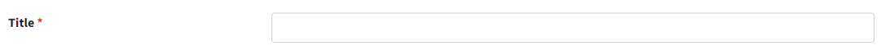
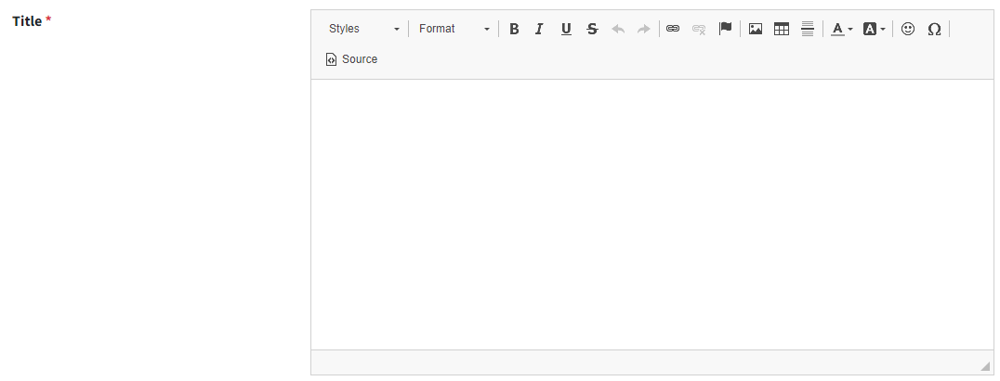

--RichText--

use this package with to have rich text field

install the package:
pip install django-ckeditor
pip install django-bleach

insert the package into INSTALLED_APPS list:
INSTALLED_APPS = [
    ...
    "ckeditor",
    "bleach"
]

use it in the model:

from ckeditor.fields import RichTextField as HTMLField
from bleach import clean
from django.utils.safestring import mark_safe

ALLOWED_TAGS = [
    "a", "abbr",
    "acronym",
    "b",
    "blockquote",
    "code",
    "em",
    "i",
    "li",
    "ol",
    "strong",
    "ul",
    'p',
    'u',
    'br',
    'span',
    'div',
    'img',
    'h1', 'h2', 'h3', 'h4', 'em', 'h5',
    'hr', 'ol', 'table', 'colgroup', 'col', 'th', 'td', 'tr',
    'tbody', 'thead'
]
ALLOWED_ATTRS = {
    '*': ['style', 'class', 'dir'],
    'a': ['href', 'title', 'target'],
    'img': ['src', 'width', 'height', 'alt'],
}

class RichText(models.Model):
    rich_text = HTMLField()

    def save(self, *args, **kwargs):
        self.rich_text = bleach(self.rich_text)

before:

after:

